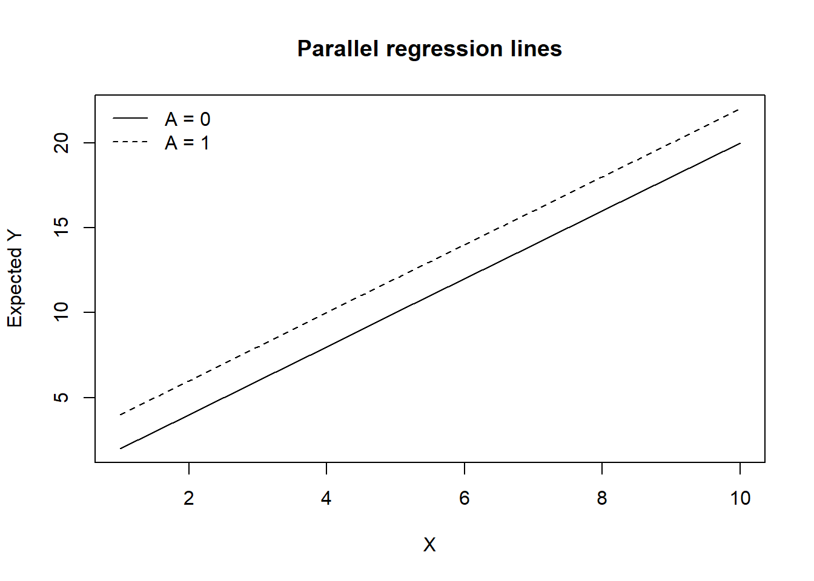
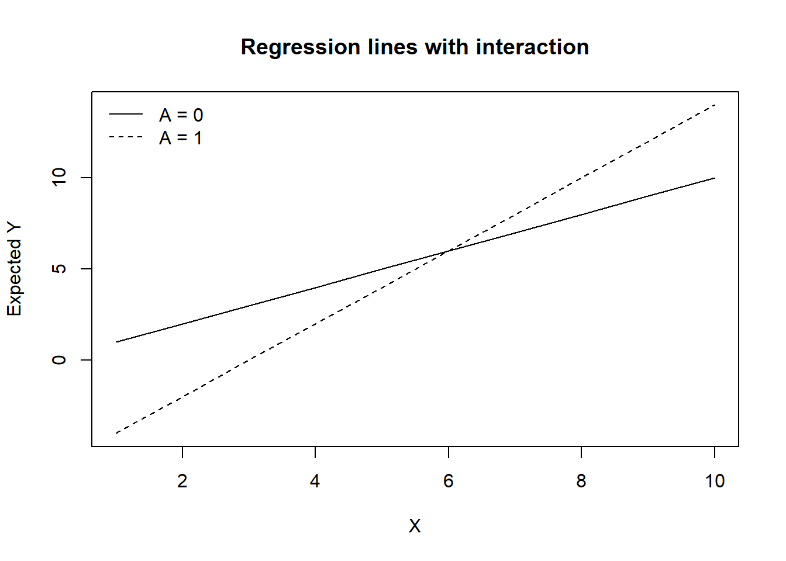
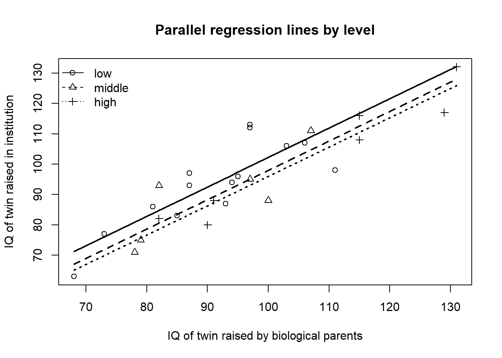
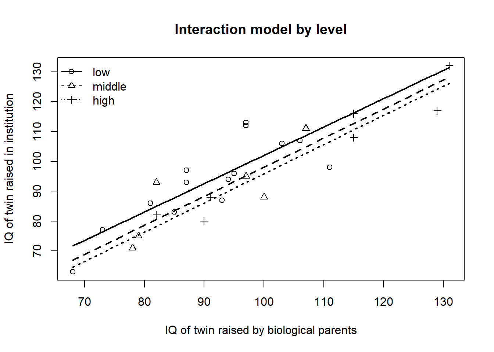

회귀분석에서는 설명변수가 반드시 연속형일 필요는 없다. 성별, 치료군, 지역, 교육수준, 질병상태처럼 범주로 표현되는 변수도 회귀모형에 포함할 수 있다. 이때 범주형 변수를 그대로 수치처럼 해석하면 안 되며, 기준범주를 정하고 나머지 범주와 비교하는 방식으로 모형을 구성해야 한다. 이를 위해 사용하는 변수가 가변수(dummy variable) 이다.
6.1 이분 가변수 경우
설명변수 \(X\)와 이분 범주형 변수 \(A\)를 포함한 다음의 회귀모형을 생각해보자.
\[
Y=\beta_0+\beta_1A+\beta_2X+\epsilon
\]
여기서 \(A\)는 0 또는 1의 값을 갖는 이분 범주형 변수이고, \(X\)는 연속형 설명변수이다. 예를 들어 \(A=0\)은 남자, \(A=1\)은 여자라고 하자. 이 모형은 다음과 같이 범주별 회귀식으로 다시 쓸 수 있다.
이 모형에서 \(A=0\)은 기준범주(reference category) 이다. 절편 \(\beta_0\)는 기준범주에서 \(X=0\)일 때의 평균 반응값을 의미한다. \(\beta_1\)은 같은 \(X\) 값을 가진 두 범주 간 평균 차이를 의미한다. \(\beta_2\)는 두 범주에서 공통으로 적용되는 \(X\)의 기울기이다.
따라서 이 모형은 두 범주가 서로 다른 절편을 가지지만, \(X\)에 대한 기울기는 같다고 가정하는 모형이다. 즉, 두 회귀직선은 평행하다.
상호작용항이 없는 모형
상호작용항이 없는 모형은 다음과 같은 상황을 나타낸다.
x <-1:10y_group0 <-2* xy_group1 <-2* x +2plot(x, y_group0, type ="l",ylim =range(c(y_group0, y_group1)),xlab ="X", ylab ="Expected Y",main ="Parallel regression lines")lines(x, y_group1, lty =2)legend("topleft",legend =c("A = 0", "A = 1"),lty =c(1, 2),bty ="n")

두 직선의 기울기는 같고 절편만 다르다. 이 경우 가변수의 회귀계수는 모든 \(X\) 값에서 일정한 집단 간 평균 차이를 의미한다.
여기서 \(\beta_{12}\)는 \(A=1\)인 집단에서 \(X\)의 기울기가 기준범주에 비해 얼마나 달라지는지를 나타낸다. 즉, \(\beta_{12}\)는 기울기 차이를 의미한다.
x <-1:10y_group0 <-1* xy_group1 <-2* x -6plot(x, y_group0, type ="l",ylim =range(c(y_group0, y_group1)),xlab ="X", ylab ="Expected Y",main ="Regression lines with interaction")lines(x, y_group1, lty =2)legend("topleft",legend =c("A = 0", "A = 1"),lty =c(1, 2),bty ="n")

상호작용항이 있는 모형에서는 두 집단 간 차이가 \(X\)의 값에 따라 달라진다. 따라서 \(\beta_1\)을 단순히 전체적인 집단 차이로 해석하면 안 된다. \(\beta_1\)은 \(X=0\)일 때의 집단 간 차이를 의미하며, 다른 \(X\) 값에서의 집단 차이는 \(\beta_1+\beta_{12}X\)로 계산된다.
6.2 두 개 회귀직선의 비교
그룹별로 회귀직선을 따로 추정한 뒤, 두 회귀직선이 같은지 또는 평행한지 검정할 수 있다. 예를 들어 남성과 여성에 대해 각각 다음과 같은 회귀모형을 적합한다고 하자.
여기서 기준범주는 \(A=3\)이다. \(\beta_1\)은 \(A=1\)과 \(A=3\)의 평균 차이를 의미하고, \(\beta_2\)는 \(A=2\)와 \(A=3\)의 평균 차이를 의미한다. 두 회귀계수 모두 같은 \(X\) 값을 가진 경우의 차이로 해석한다.
왜 \(q-1\)개의 가변수를 사용하는가?
세 범주에 대해 \(A_1\), \(A_2\), \(A_3\)를 모두 만들고 절편까지 포함하면 다음 관계가 성립한다.
\[
A_1+A_2+A_3=1
\]
그런데 회귀모형에는 이미 절편항이 포함되어 있으므로, 세 가변수의 합은 절편열과 완전히 같은 정보를 갖게 된다. 이 경우 설계행렬의 열들 사이에 완전한 선형종속성이 생기며, 이를 가변수 함정(dummy variable trap) 이라고 한다. 따라서 절편이 있는 회귀모형에서는 범주가 \(q\)개이면 \(q-1\)개의 가변수만 사용해야 한다.
상호작용항이 포함되면 범주별 기울기가 달라진다. 이 경우 범주 간 차이는 \(X\)의 값에 따라 달라지므로, 단순히 절편 차이만으로 집단 차이를 설명할 수 없다.
6.4 R 활용 가변수 회귀분석
6.4.1 예제 1: 구름 데이터
1975년 미국 플로리다 주에서 구름에 silver iodide 씨앗을 뿌린 후 강수량 증가를 관찰한 실험 자료를 사용한다. 이 자료에는 씨앗을 뿌렸는지 여부(seeding), 구름의 적합도(sne), 구름 형태(echomotion), 강수량(rainfall) 등이 포함되어 있다.
아래 코드는 HSAUR 패키지가 설치되어 있으면 실제 clouds 자료를 사용하고, 설치되어 있지 않으면 렌더링을 위해 유사한 예제 자료를 생성한다.
fit_twin_parallel <-lm(Y ~ level + X, data = twin)summary(fit_twin_parallel)
Call:
lm(formula = Y ~ level + X, data = twin)
Residuals:
Min 1Q Median 3Q Max
-14.8235 -5.2366 -0.1111 4.4755 13.6978
Coefficients:
Estimate Std. Error t value Pr(>|t|)
(Intercept) 5.6188 9.9628 0.564 0.578
levelmiddle -4.1911 3.6951 -1.134 0.268
levelhigh -6.2264 3.9171 -1.590 0.126
X 0.9658 0.1069 9.031 5.05e-09 ***
---
Signif. codes: 0 '***' 0.001 '**' 0.01 '*' 0.05 '.' 0.1 ' ' 1
Residual standard error: 7.571 on 23 degrees of freedom
Multiple R-squared: 0.8039, Adjusted R-squared: 0.7784
F-statistic: 31.44 on 3 and 23 DF, p-value: 2.604e-08
anova(fit_twin_parallel)
Analysis of Variance Table
Response: Y
Df Sum Sq Mean Sq F value Pr(>F)
level 2 731.5 365.8 6.3811 0.006245 **
X 1 4674.7 4674.7 81.5521 5.047e-09 ***
Residuals 23 1318.4 57.3
---
Signif. codes: 0 '***' 0.001 '**' 0.01 '*' 0.05 '.' 0.1 ' ' 1
이 모형에서 기준범주는 level = low이다. levelmiddle의 회귀계수는 친부모의 생활수준이 낮은 집단과 비교했을 때 중간 집단의 평균 차이를 의미한다. levelhigh의 회귀계수는 낮은 집단과 비교했을 때 높은 집단의 평균 차이를 의미한다. 두 해석 모두 같은 X 값을 가진 경우의 비교이다.
plot(twin$X, twin$Y,pch =as.numeric(twin$level),xlab ="IQ of twin raised by biological parents",ylab ="IQ of twin raised in institution",main ="Parallel regression lines by level")grid <-seq(min(twin$X), max(twin$X), length.out =100)for (lv inlevels(twin$level)) { newdat <-data.frame(X = grid,level =factor(lv, levels =levels(twin$level)) )lines(grid, predict(fit_twin_parallel, newdata = newdat),lty =match(lv, levels(twin$level)), lwd =2)}legend("topleft",legend =levels(twin$level),pch =seq_along(levels(twin$level)),lty =seq_along(levels(twin$level)),bty ="n")

다음으로 상호작용항을 포함하여 성장환경 수준에 따라 X의 기울기가 달라지는지 확인한다.
fit_twin_interaction <-lm(Y ~ level * X, data = twin)summary(fit_twin_interaction)
Call:
lm(formula = Y ~ level * X, data = twin)
Residuals:
Min 1Q Median 3Q Max
-14.479 -5.248 -0.155 4.582 13.798
Coefficients:
Estimate Std. Error t value Pr(>|t|)
(Intercept) 7.20461 16.75126 0.430 0.672
levelmiddle -6.38859 31.02087 -0.206 0.839
levelhigh -9.07665 24.44870 -0.371 0.714
X 0.94842 0.18218 5.206 3.69e-05 ***
levelmiddle:X 0.02414 0.33933 0.071 0.944
levelhigh:X 0.02914 0.24458 0.119 0.906
---
Signif. codes: 0 '***' 0.001 '**' 0.01 '*' 0.05 '.' 0.1 ' ' 1
Residual standard error: 7.921 on 21 degrees of freedom
Multiple R-squared: 0.8041, Adjusted R-squared: 0.7574
F-statistic: 17.24 on 5 and 21 DF, p-value: 8.31e-07
anova(fit_twin_parallel, fit_twin_interaction)
Analysis of Variance Table
Model 1: Y ~ level + X
Model 2: Y ~ level * X
Res.Df RSS Df Sum of Sq F Pr(>F)
1 23 1318.4
2 21 1317.5 2 0.93181 0.0074 0.9926
상호작용항이 유의하다면 성장환경 수준에 따라 두 IQ 사이의 관계, 즉 기울기가 다르다고 해석한다. 상호작용항이 유의하지 않다면 수준별 절편 차이만 허용하는 평행선 모형이 더 간결하고 해석하기 쉬운 모형일 수 있다.
plot(twin$X, twin$Y,pch =as.numeric(twin$level),xlab ="IQ of twin raised by biological parents",ylab ="IQ of twin raised in institution",main ="Interaction model by level")for (lv inlevels(twin$level)) { newdat <-data.frame(X = grid,level =factor(lv, levels =levels(twin$level)) )lines(grid, predict(fit_twin_interaction, newdata = newdat),lty =match(lv, levels(twin$level)), lwd =2)}legend("topleft",legend =levels(twin$level),pch =seq_along(levels(twin$level)),lty =seq_along(levels(twin$level)),bty ="n")

6.5 기준범주 변경과 해석
가변수 회귀모형에서 기준범주를 바꾸면 회귀계수의 값과 해석은 달라진다. 하지만 모형의 적합값, 잔차, \(R^2\)는 변하지 않는다. 즉, 기준범주의 변경은 모형 자체를 바꾸는 것이 아니라 비교의 기준을 바꾸는 것이다.
fit_low_ref <-lm(Y ~ level + X, data = twin)twin$level_high_ref <-relevel(twin$level, ref ="high")fit_high_ref <-lm(Y ~ level_high_ref + X, data = twin)coef(fit_low_ref)
(Intercept) levelmiddle levelhigh X
5.6188260 -4.1910897 -6.2264260 0.9658077
coef(fit_high_ref)
(Intercept) level_high_reflow level_high_refmiddle
-0.6076000 6.2264260 2.0353362
X
0.9658077